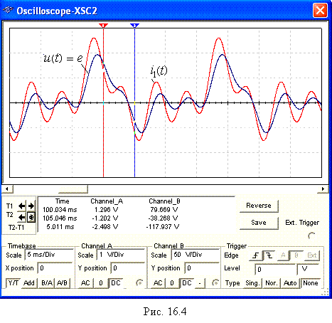

Задание 3. Измерить мгновенные значения ЭДС е(t) и i1(t) при t1 = 0 и t2 = 5 мс и занести их в табл. 16.2.
Для этого:
- разомкнуть ключи 0, 1, 2,
4, нажать на клавишу Q, т. е. подключить цепь к
несинусоидальной периодической ЭДС е(t), установить на приборах V1, V2, А1, А2
и А3 режим
работы
АC и
запустить
программу MS10;
- с целью исключения влияния свободной составляющей переходного процесса установить визир 1 осциллографа
в положение T1 = 100
мс (по истечении пяти периодов основной гармоники е1 (f1 = 50 Гц)
периодической несинусоидальной ЭДС е(t)), а визир 2 - в положение T2 = 105 мс;
- занести
значения е(t1), е(t2), i1(t1), i1(t2) в табл. 16.2;
- скопировать
осциллограммы ЭДС е(t) и i1(t) на страницу отчёта.
В качестве примера на рис. 16.4
приведены осциллограммы е(t) и i1(t) с установленными визирами 1 и 2.
Результаты измерений для варианта
N = 36:
